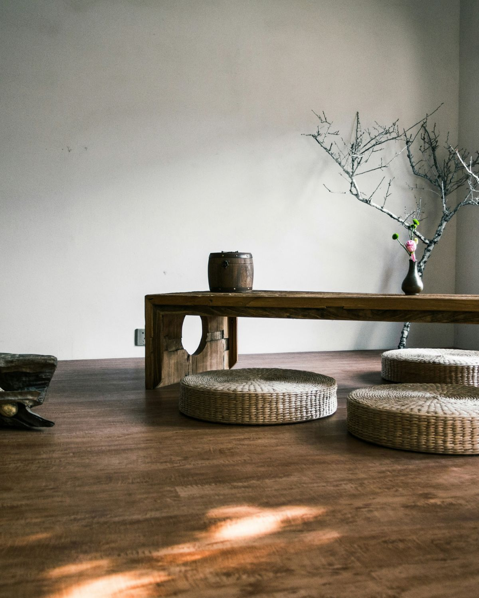

MATIÈRES
Le bois comme fil conducteur
Teck, bois massif ou fibres naturelles : les matières brutes apportent chaleur et caractère à l'espace.
L'UNIVERS KASA
Des idées, des matières et des associations pour imaginer un intérieur chaleureux, naturel et personnel.

NOS INSPIRATIONS
Chez KASA, nous imaginons des intérieurs où les matières naturelles, les formes organiques et les objets choisis racontent une histoire.
MATIÈRES
Teck, bois massif ou fibres naturelles : les matières brutes apportent chaleur et caractère à l'espace.

AMBIANCE
Une palette douce, quelques textures et des pièces fortes suffisent à créer une atmosphère accueillante.

DÉCORATION
Vase, céramique, textile ou lumière : quelques objets bien choisis donnent du relief à une pièce.
« La maison devient personnelle lorsque chaque pièce trouve naturellement sa place. »